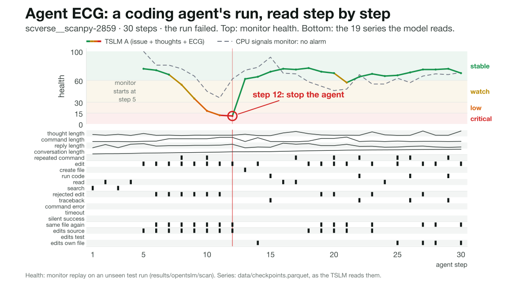
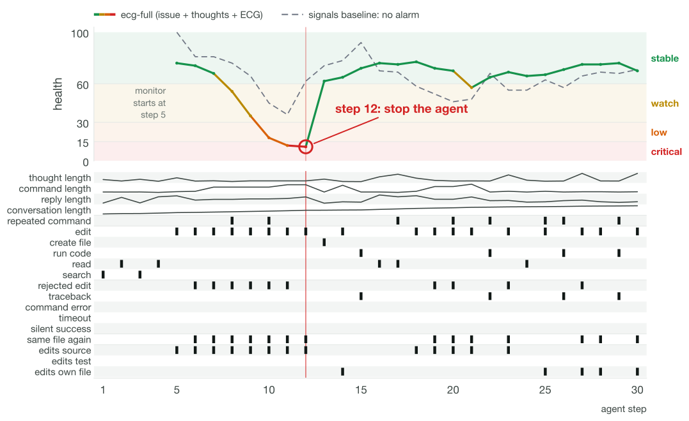
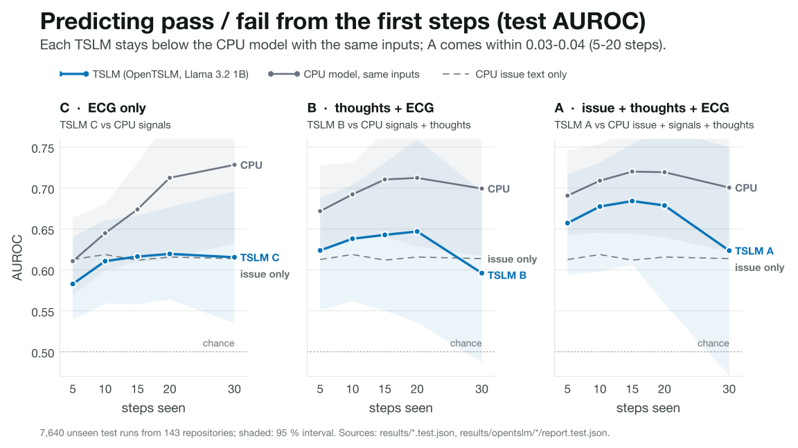
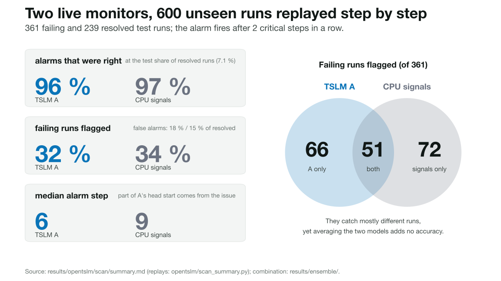
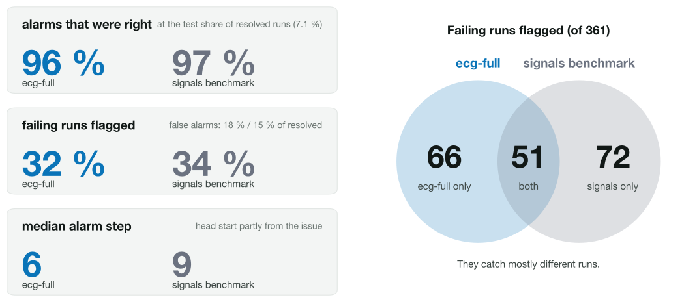
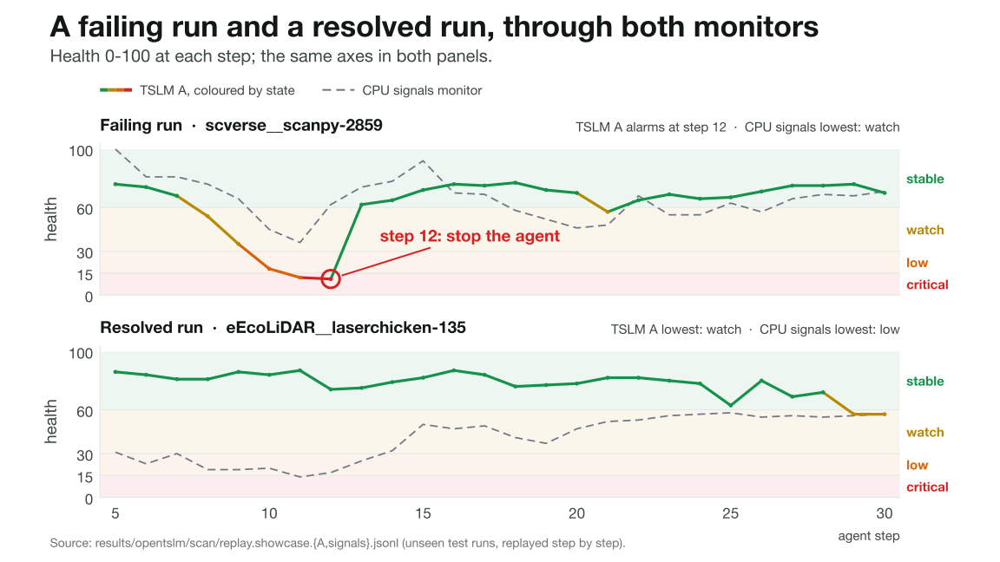
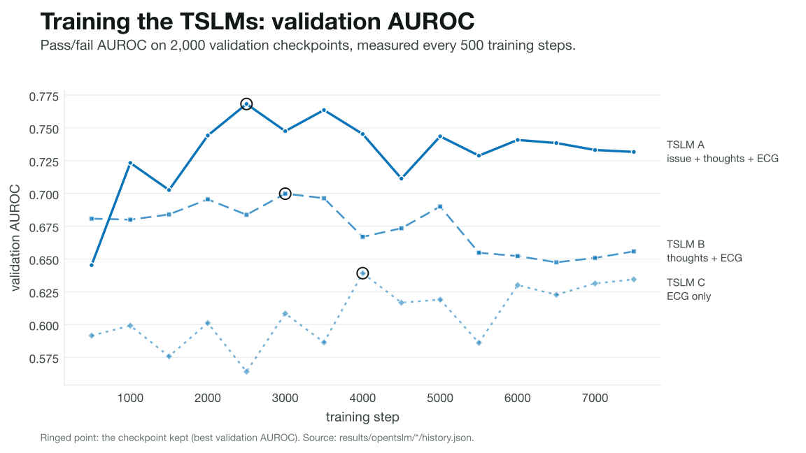

<title>Agent ECG</title>
<meta name="claude:viewport-fit-sides" content="cover">
<meta name="description" content="Reading a coding agent's run step by step to warn early when it is going to fail.">
<link rel="preconnect" href="https://fonts.googleapis.com">
<link rel="stylesheet" href="https://fonts.googleapis.com/css2?family=Space+Grotesk:wght@500;700&family=Inter:wght@400;500;600&family=JetBrains+Mono:wght@400;600&display=swap">
<style>
/* Layout: one reading column (~68ch) on ECG paper; figures break out wider; numbers set in mono. */
:root {
  --bg: #ffffff;
  --paper-minor: rgba(214, 74, 74, 0.07);
  --paper-major: rgba(214, 74, 74, 0.16);
  --fg: #141a18;
  --fg2: #3f4946;
  --muted: #6b7571;
  --rule: #e3e7e5;
  --panel: #f4f6f5;
  --tslm: #0a74b8;
  --cpu: #6b7280;
  --alarm: #d32323;
  --stable: #16924c;
  --show-light: block;
  --show-dark: none;
  --display: "Space Grotesk", "Helvetica Neue", Arial, sans-serif;
  --body: "Inter", "Helvetica Neue", Arial, sans-serif;
  --mono: "JetBrains Mono", ui-monospace, Menlo, monospace;
}
@media (prefers-color-scheme: dark) {
  :root:not([data-theme="light"]) {
    --bg: #07090a; --paper-minor: rgba(61, 220, 132, 0.05); --paper-major: rgba(61, 220, 132, 0.11);
    --fg: #eef2f0; --fg2: #b8c2be; --muted: #8a9490; --rule: #1f282b; --panel: #11161a;
    --tslm: #4cc9f0; --cpu: #9aa3a0; --alarm: #ff4d4d; --stable: #3ddc84;
    --show-light: none; --show-dark: block; color-scheme: dark;
  }
}
:root[data-theme="dark"] {
  --bg: #07090a; --paper-minor: rgba(61, 220, 132, 0.05); --paper-major: rgba(61, 220, 132, 0.11);
  --fg: #eef2f0; --fg2: #b8c2be; --muted: #8a9490; --rule: #1f282b; --panel: #11161a;
  --tslm: #4cc9f0; --cpu: #9aa3a0; --alarm: #ff4d4d; --stable: #3ddc84;
  --show-light: none; --show-dark: block; color-scheme: dark;
}

body { background: var(--bg); color: var(--fg); font: 400 1.0625rem/1.65 var(--body); }
.wrap { padding-left: max(16px, env(safe-area-inset-left, 0px)); padding-right: max(16px, env(safe-area-inset-right, 0px)); }
.col { max-width: 44rem; margin-inline: auto; }
.wide { max-width: 72rem; margin-inline: auto; }
.mid { max-width: 58rem; margin-inline: auto; }

/* hero on ECG paper: 1 mm minor and 5 mm major squares */
.hero {
  margin-top: calc(-1 * env(safe-area-inset-top, 0px));
  padding-top: calc(env(safe-area-inset-top, 0px) + 3.5rem);
  padding-bottom: 2.5rem;
  background-color: var(--bg);
  background-image:
    linear-gradient(var(--paper-major) 1px, transparent 1px),
    linear-gradient(90deg, var(--paper-major) 1px, transparent 1px),
    linear-gradient(var(--paper-minor) 1px, transparent 1px),
    linear-gradient(90deg, var(--paper-minor) 1px, transparent 1px);
  background-size: 40px 40px, 40px 40px, 8px 8px, 8px 8px;
  border-bottom: 1px solid var(--rule);
}
.eyebrow { font: 600 0.8rem/1.2 var(--mono); letter-spacing: 0.08em; text-transform: uppercase; color: var(--muted); }
h1 { font: 700 clamp(2.6rem, 7vw, 4.6rem)/1.02 var(--display); letter-spacing: -0.02em; margin: 0.6rem 0 1rem; text-wrap: balance; }
h1 .beat { color: var(--alarm); }
.lede { font-size: 1.25rem; line-height: 1.55; color: var(--fg2); max-width: 40rem; margin: 0; }
h2 { font: 700 clamp(1.6rem, 3.6vw, 2.1rem)/1.15 var(--display); letter-spacing: -0.01em; margin: 0 0 0.9rem; text-wrap: balance; }
h3 { font: 600 1.1rem/1.3 var(--display); margin: 1.6rem 0 0.4rem; }
p { margin: 0 0 1rem; }
section { padding-block: 3.25rem; border-bottom: 1px solid var(--rule); }
code { font: 0.92em var(--mono); }
a { color: var(--tslm); text-underline-offset: 3px; }
a:focus-visible { outline: 2px solid var(--tslm); outline-offset: 2px; }

.chart { margin: 2rem 0 0; }
.chart img { width: 100%; height: auto; border-radius: 6px; border: 1px solid var(--rule); }
.chart img.light { display: var(--show-light); }
.chart img.dark { display: var(--show-dark); }
.chart figcaption { font-size: 0.92rem; color: var(--muted); margin-top: 0.7rem; max-width: 46rem; }

.stats { display: grid; grid-template-columns: repeat(auto-fit, minmax(11rem, 1fr)); gap: 1px; background: var(--rule);
  border: 1px solid var(--rule); border-radius: 6px; overflow: hidden; margin-top: 2.25rem; }
.stat { background: var(--bg); padding: 1.1rem 1.2rem; min-width: 0; }
.stat b { display: block; font: 600 1.9rem/1.1 var(--mono); font-variant-numeric: tabular-nums; letter-spacing: -0.02em; }
.stat span { font-size: 0.88rem; color: var(--fg2); }
.stat.alarm b { color: var(--alarm); }
.stat.tslm b { color: var(--tslm); }

.findings { list-style: none; padding: 0; margin: 1.2rem 0 0; display: grid; gap: 0.9rem; }
.findings li { padding-left: 1.1rem; border-left: 3px solid var(--rule); }
.findings li.tslm { border-left-color: var(--tslm); }
.findings li.no { border-left-color: var(--alarm); }

.table { overflow-x: auto; margin: 1.6rem 0 0; }
table { border-collapse: collapse; width: 100%; font-size: 0.95rem; font-variant-numeric: tabular-nums; }
th, td { padding: 0.5rem 0.7rem; text-align: right; border-bottom: 1px solid var(--rule); white-space: nowrap; }
th:first-child, td.reads { text-align: left; }
td.reads { color: var(--muted); }
thead th { font: 600 0.78rem/1.2 var(--mono); text-transform: uppercase; letter-spacing: 0.06em; color: var(--muted); }
tbody th { font-weight: 500; }
td { font-family: var(--mono); }
td.reads { font-family: var(--body); }
td.best { font-weight: 600; color: var(--fg); background: var(--panel); }
tr.tslm th { color: var(--tslm); }
.tag { font: 600 0.68rem/1 var(--mono); letter-spacing: 0.06em; padding: 0.2rem 0.35rem; border-radius: 3px; border: 1px solid currentColor; margin-right: 0.35rem; vertical-align: 2px; }
tr.cpu .tag { color: var(--cpu); }
.note { font-size: 0.88rem; color: var(--muted); margin-top: 0.6rem; }

.channels { display: grid; grid-template-columns: repeat(auto-fit, minmax(12rem, 1fr)); gap: 1rem; margin-top: 1.2rem; }
.channels div { background: var(--panel); border-radius: 6px; padding: 0.9rem 1rem; min-width: 0; }
.channels h4 { margin: 0 0 0.3rem; font: 600 0.78rem/1.2 var(--mono); text-transform: uppercase; letter-spacing: 0.06em; color: var(--muted); }
.channels p { margin: 0; font-size: 0.94rem; }

footer { padding-block: 2.5rem 3.5rem; color: var(--muted); font-size: 0.92rem; }
footer ul { padding-left: 1.1rem; margin: 0.4rem 0 1rem; }
@media (prefers-reduced-motion: no-preference) { h1 .beat { display: inline-block; animation: beat 2.4s ease-in-out 1; } }
@keyframes beat { 0%, 100% { transform: none; } 8% { transform: scale(1.08); } 16% { transform: none; } 24% { transform: scale(1.05); } 32% { transform: none; } }
</style>

<header class="hero wrap">
  <div class="wide">
    <div class="eyebrow">TimeNet hackathon · Team RAMadan</div>
    <h1>An <span class="beat">ECG</span> for coding agents</h1>
    <p class="lede">Coding agents fail on most real GitHub issues, and today you only find out at the end. We read an agent's run step by step, like a heart monitor, and ask after every step whether the run is still going to make it.</p>
    <figure class="chart"><figcaption>An unseen test run on <code>scverse__scanpy-2859</code>. TSLM A's health falls through watch and low while the agent keeps re-editing the same file after the linter rejected its edits, and the alarm fires at step 12. The run went on to fail (it ran out of context). The CPU signals monitor (grey, dashed) never alarms on this run. Below it are the 19 series the model reads, one row each.</figcaption></figure>
    <div class="stats">
      <div class="stat"><b>76,182</b><span>SWE-agent runs on real GitHub issues</span></div>
      <div class="stat"><b>83&nbsp;%</b><span>of runs still going at step 5 fail (96&nbsp;% at step 30)</span></div>
      <div class="stat tslm"><b>96&nbsp;%</b><span>of TSLM&nbsp;A's alarms were right</span></div>
      <div class="stat alarm"><b>step 6</b><span>median alarm, against step 9 for the CPU monitor</span></div>
    </div>
  </div>
</header>

<main>
<section class="wrap"><div class="col">
  <h2>The problem</h2>
  <p>A coding agent works for dozens of steps on a task: it reads files, edits code, runs tests, and reads the replies. Most of those runs fail, and the failing ones are the long ones that burn compute until they hit the context limit. The verdict usually comes at the very end, when the tests pass or fail.</p>
  <p>A live signal would let an operator, or the agent itself, stop, restart or escalate a run that is going wrong. Since each step leaves a trace (what the agent did, how the environment replied, how long everything was), a run can be read as a time series. That is what a time-series language model (TSLM) is built to read, alongside text.</p>
</div></section>

<section class="wrap"><div class="col">
  <h2>The data: what the monitor reads</h2>
  <p>We contributed a TimeNet connector for <a href="https://huggingface.co/datasets/nebius/SWE-agent-trajectories">nebius/SWE-agent-trajectories</a> (<a href="https://github.com/OpenTSLM/TimeNet/pull/832">TimeNet PR #832</a>). It turns the runs into 235,978 <strong>checkpoints</strong>: the first 5, 10, 15, 20 or 30 steps of a run that is still going. A checkpoint never contains the end of the run, so no input gives the outcome away.</p>
  <p>The "ECG" is 19 series with one value per step. It is a multichannel event trace, not a waveform:</p>
  <div class="channels">
    <div><h4>4 lengths</h4><p>the agent's thought, its command, the environment's reply, and the whole conversation so far</p></div>
    <div><h4>5 actions</h4><p>edit, create a file, run code, read, search</p></div>
    <div><h4>5 replies</h4><p>rejected edit, traceback, command error, timeout, silent success</p></div>
    <div><h4>5 patterns</h4><p>repeated command, same file as the last edit, and whether an edit touches a source, test or own file</p></div>
  </div>
  <p style="margin-top:1.2rem">The data is split by repository, so no repository or issue appears in two splits. The test split holds 7,640 runs from 143 repositories never seen in training.</p>
  <div class="table"><table>
    <thead><tr><th>Steps seen</th><th>Runs still going</th><th>Of those, fail</th></tr></thead>
    <tbody><tr><td>5</td><td>76,182</td><td>83&nbsp;%</td></tr><tr><td>10</td><td>59,708</td><td>86&nbsp;%</td></tr><tr><td>15</td><td>43,550</td><td>91&nbsp;%</td></tr><tr><td>20</td><td>34,059</td><td>94&nbsp;%</td></tr><tr><td>30</td><td>22,479</td><td>96&nbsp;%</td></tr></tbody>
  </table></div>
</div></section>

<section class="wrap">
  <div class="col">
    <h2>Predicting pass or fail from the first steps</h2>
    <p>We fine-tuned three OpenTSLM models that read different inputs, and gave each one a CPU baseline that reads exactly the same inputs. All scores are AUROC on the unseen test repositories, reported separately at each checkpoint. 0.5 is chance.</p>
  </div>
  <div class="wide"><figure class="chart"><figcaption>Each panel pairs a TSLM (blue) with the CPU model that reads the same inputs (grey). The dashed line reads the issue text only; the shading is a 95&nbsp;% interval from resampling test repositories.</figcaption></figure></div>
  <div class="mid">
    <div class="table"><table>
      <thead><tr><th>Model</th><th>Reads</th><th>5</th><th>10</th><th>15</th><th>20</th><th>30</th></tr></thead>
      <tbody><tr class="cpu"><th><span class="tag">CPU</span> signals</th><td class="reads">the ECG signals</td><td class="">0.611</td><td class="">0.645</td><td class="">0.674</td><td class="">0.712</td><td class="best">0.728</td></tr><tr class="cpu"><th><span class="tag">CPU</span> thoughts</th><td class="reads">the agent's thoughts</td><td class="">0.680</td><td class="">0.703</td><td class="">0.710</td><td class="">0.701</td><td class="">0.701</td></tr><tr class="cpu"><th><span class="tag">CPU</span> issue + signals + thoughts</th><td class="reads">everything</td><td class="best">0.691</td><td class="best">0.709</td><td class="best">0.720</td><td class="best">0.719</td><td class="">0.700</td></tr><tr class="cpu"><th><span class="tag">CPU</span> issue only</th><td class="reads">the issue text</td><td class="">0.613</td><td class="">0.619</td><td class="">0.612</td><td class="">0.616</td><td class="">0.614</td></tr><tr class="tslm"><th><span class="tag">TSLM</span> C</th><td class="reads">the ECG</td><td class="">0.583</td><td class="">0.611</td><td class="">0.616</td><td class="">0.620</td><td class="">0.615</td></tr><tr class="tslm"><th><span class="tag">TSLM</span> B</th><td class="reads">thoughts + ECG</td><td class="">0.624</td><td class="">0.638</td><td class="">0.643</td><td class="">0.647</td><td class="">0.596</td></tr><tr class="tslm"><th><span class="tag">TSLM</span> A (3 tasks)</th><td class="reads">issue + thoughts + ECG</td><td class="">0.657</td><td class="">0.677</td><td class="">0.684</td><td class="">0.679</td><td class="">0.624</td></tr></tbody>
    </table></div>
    <p class="note">Column headers are the number of steps seen. The shaded cell is the best score at that step.</p>
  </div>
  <div class="col">
    <ul class="findings">
      <li><strong>The behaviour signal grows over the run.</strong> The CPU model of the ECG signals climbs from 0.611 at 5 steps to 0.728 at 30. A model that reads only the issue text stays flat between 0.61 and 0.62.</li>
      <li class="tslm"><strong>TSLM A comes within 0.03&ndash;0.04 of the best CPU model</strong> at 5&ndash;20 steps. The gap is not significant there (paired bootstrap over test repositories).</li>
      <li class="no"><strong>Every TSLM scores below the CPU model with the same inputs.</strong> The ECG-only TSLM&nbsp;C stays between 0.58 and 0.62.</li>
    </ul>
  </div>
</section>

<section class="wrap">
  <div class="col">
    <h2>As a live monitor</h2>
    <p>A monitor turns each prediction into a health score from 0 to 100, and sounds the alarm after 2 critical steps in a row. We replayed 600 unseen test runs step by step through two monitors: TSLM&nbsp;A, and the CPU model of the signals. The runs were all 239 resolved test runs with at least 20 steps, plus 361 random failing ones. Neither monitor chose them.</p>
  </div>
  <div class="wide"><figure class="chart"><figcaption>The Venn counts are the failing runs each monitor flags (of 361); the circles are not to scale.</figcaption></figure></div>
  <div class="col">
    <div class="table"><table>
      <thead><tr><th>Monitor</th><th>Failing runs flagged</th><th>Median alarm step</th><th>False alarms</th><th>Alarms that were right*</th></tr></thead>
      <tbody><tr><th>TSLM A</th><td>32.4&nbsp;%</td><td>6</td><td>18.4&nbsp;%</td><td>95.8&nbsp;%</td></tr><tr><th>CPU signals</th><td>34.1&nbsp;%</td><td>9</td><td>14.6&nbsp;%</td><td>96.8&nbsp;%</td></tr></tbody>
    </table></div>
    <p class="note">* At the natural share of resolved runs among runs that last 20 steps (7.1&nbsp;%). False alarms are the share of resolved runs flagged.</p>
    <p>The two monitors flag mostly different runs: 66 only by A, 72 only by the signals monitor, and 51 by both. Part of A's head start comes from the issue text: half of its alarms fire at the earliest possible step, and they cluster by issue. The showcase run above is one where A's alarm rests on behaviour, and A spares the other runs of the same issue.</p>
  </div>
  <div class="wide"><figure class="chart"><figcaption>The showcase failing run and a resolved run. TSLM A stays stable on the resolved run until a dip to watch at the end; the CPU signals monitor reads it as low early on.</figcaption></figure></div>
</section>

<section class="wrap"><div class="col">
  <h2>What we have not shown</h2>
  <ul class="findings">
    <li class="no"><strong>The TSLMs do not beat simple models.</strong> Gradient-boosted trees and logistic regression on a laptop CPU score higher than every TSLM with the same inputs.</li>
    <li class="no"><strong>Combining them adds nothing.</strong> Averaging TSLM&nbsp;A with the best CPU model, without fitting anything on test, gives no gain: every interval is around zero.</li>
    <li><strong>We do not yet know how much A relies on the ECG.</strong> The test that shuffles A's series between runs has not been run. C reads the ECG alone and is above chance; for A, part of the signal is how hard the issue is.</li>
    <li><strong>The test split is small at late checkpoints.</strong> Differences under about 0.05 AUROC on a single split are not reliable; the intervals in the chart show how wide they are.</li>
  </ul>
</div></section>

<section class="wrap">
  <div class="col">
    <h2>How we trained</h2>
    <p>All three models are OpenTSLM-SP on <code>meta-llama/Llama-3.2-1B</code>, fine-tuned from <code>OpenTSLM/llama-3.2-1b-ecg-sp</code> on one L40S each. C reads the ECG only, B reads the agent's thoughts and the ECG, and A reads the issue, the thoughts and the ECG and learns three tasks: pass or fail, how the run will end, and a short status report. Training took 2.8&nbsp;h (C), 5.3&nbsp;h (B) and 7.1&nbsp;h (A), 15.2 GPU-hours in all. OpenTSLM's eager attention ran out of memory on A's long prompts; switching to PyTorch SDPA (the same math) made A fit and cut its training time by more than half.</p>
  </div>
  <div class="wide"><figure class="chart"><figcaption>Validation AUROC during training; the ringed point is the checkpoint we kept. Validation runs are not the test set.</figcaption></figure></div>
</section>
</main>

<footer class="wrap"><div class="col">
  <strong>Sources</strong>
  <ul>
    <li>Dataset: <a href="https://huggingface.co/datasets/nebius/SWE-agent-trajectories">nebius/SWE-agent-trajectories</a> (CC BY 4.0)</li>
    <li>TimeNet connector: <a href="https://github.com/OpenTSLM/TimeNet/pull/832">OpenTSLM/TimeNet#832</a></li>
    <li>Model: <a href="https://github.com/OpenTSLM/OpenTSLM">OpenTSLM</a></li>
  </ul>
  Every number and chart on this page is generated from the project's result files.
</div></footer>
